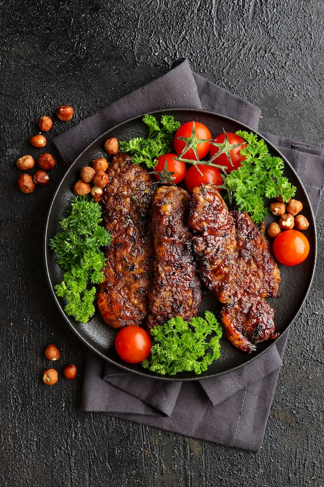

Grilled Steak

A steak is a thick cut of meat generally sliced across
the muscle fibers, sometimes including a bone. It is normally
grilled or fried. Steak can be diced, cooked in sauce, such as
in steak and kidney pie, or minced and formed into patties, such
as hamburgers.
Ingredients
- Olive oil
- Boneless rib eye, or New York strip steaks, or fillet mignons
- Kosher Salt
- Freshly ground pepper
Steps
- About 20 minutes before grilling, remove the steaks from the refrigerator and let sit, covered, at room temperature.
- Heat your grill to high. Brush the steaks on both sides with oil and season liberally with salt and pepper.
- Place the steaks on the grill and cook until golden brown and slightly charred, 4 to 5 minutes.
- Turn the steaks over and continue to grill 3 to 5 minutes for medium-rare
- Transfer the steaks to a cutting board or platter, tent loosely with foil and let rest 5 minutes before slicing.
Homepage